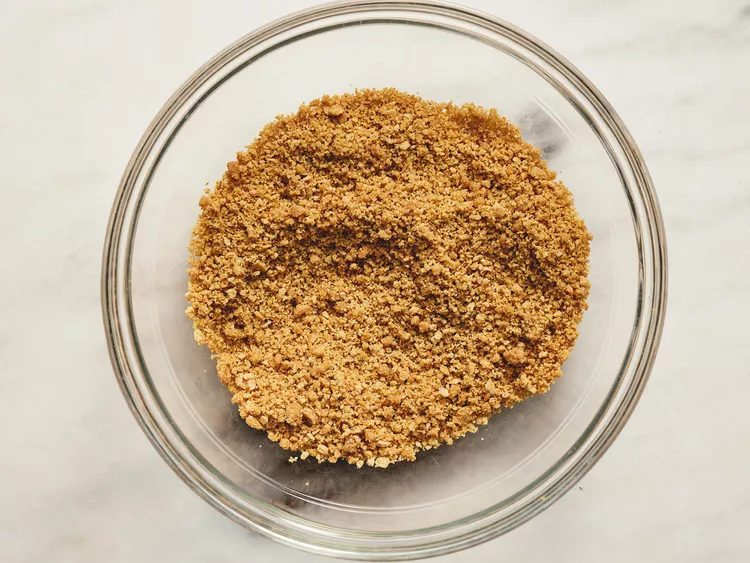
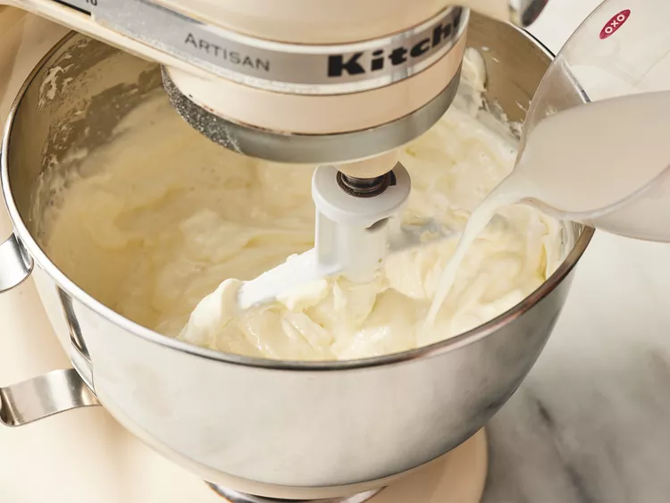
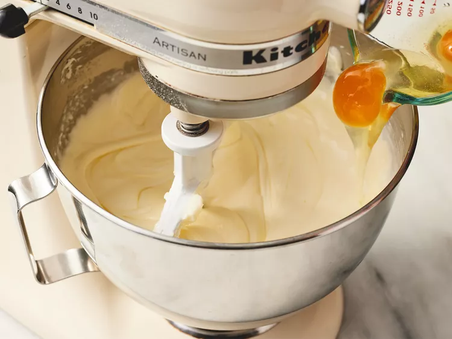
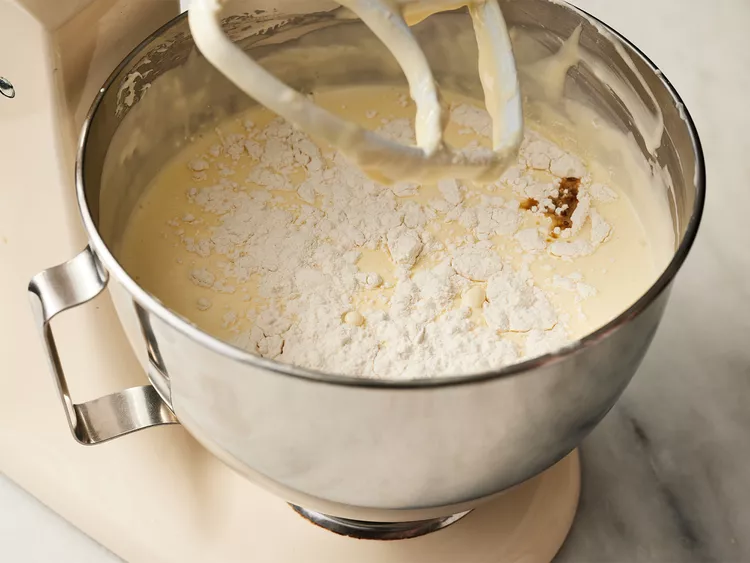
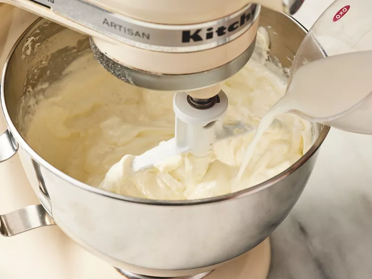
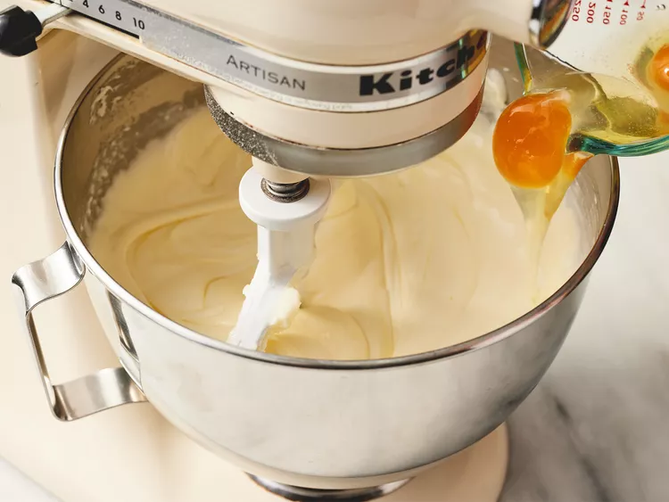
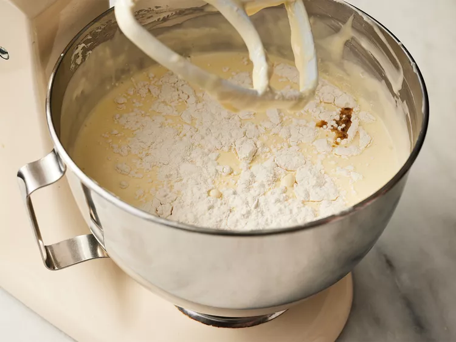
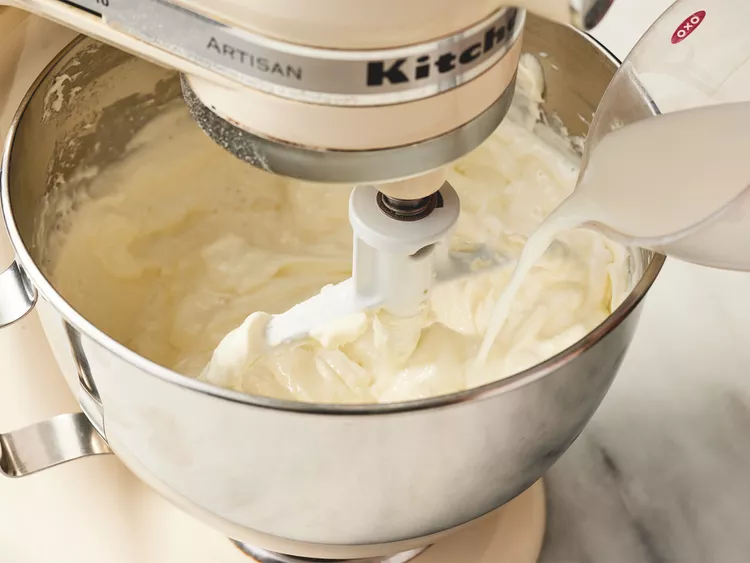
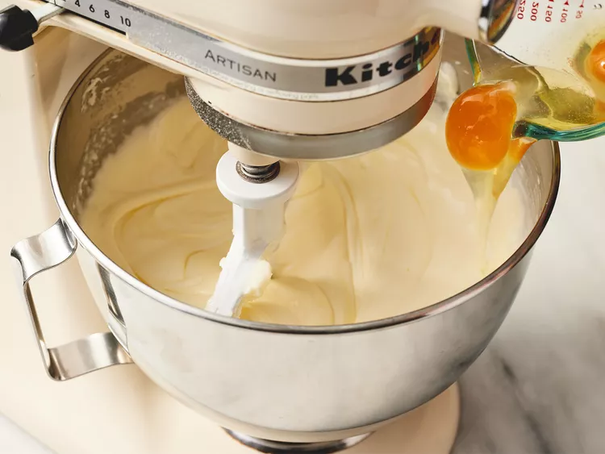
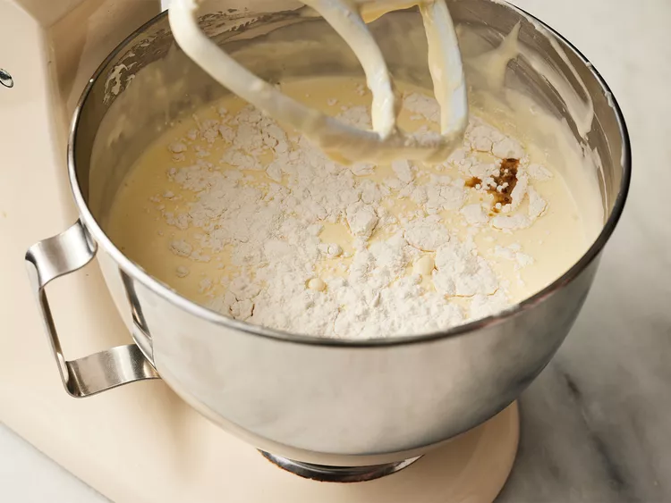

Sample Imagery

 







This New York cheesecake recipe is easy to make, and it's so delicious. Everyone that's tried it has said it tastes just like the ones you'd get in a deli! You'll love it!
Preheat the oven to 350 degrees F (175 degrees C). Grease a 9-inch springform pan.
Mix graham cracker crumbs and melted butter together in a medium bowl until well combined.
Press onto the bottom of the prepared pan to make a packed crust.
Mix cream cheese and sugar together in a large bowl until smooth. Blend in milk, then mix in eggs, one at a time, until just combined.
Add sour cream, flour, and vanilla; mix until smooth.
Pour filling onto prepared crust. Bake in the preheated oven for 1 hour.
Turn the oven off
Let cheesecake cool in the oven with the door closed for 5 to 6 hours to prevent cracking. Chill in the refrigerator until serving.



This website includes vibrant pictures of each recipe. Also, you can get a lot out of the recipe cards (type of dish, reviews, short description, etc.). Once you are in the website, you can see how long the recipe will take and a brief history of the dish.
My favorite thing about this website is the color scheme. Also, there is an aesthetic image treatment when hovering over a recipe. The recipe itself is easy to read with the ability to both print and add to social media.
This website has both recipes and blog posts. I enjoy the general cooking tips that you can explore. There are also relevant tips within each individual recipe.
This website has an intuitive, personalized homepage. I enjoy how the pictures are so large with little information until clicked upon. This allows users to easily and quickly scroll through the page until they find something that interests them.
This website has a lot to do the homepage but compensates with the amount of negative space. The images are easy to view without needing to open a new page or popout to read more.
This website uses a lot of photography and large headers. I appreciate the video that immediately plays as you enter the site. Also, I enjoy how it doesn't just surround shopping but covers sports topics as well.